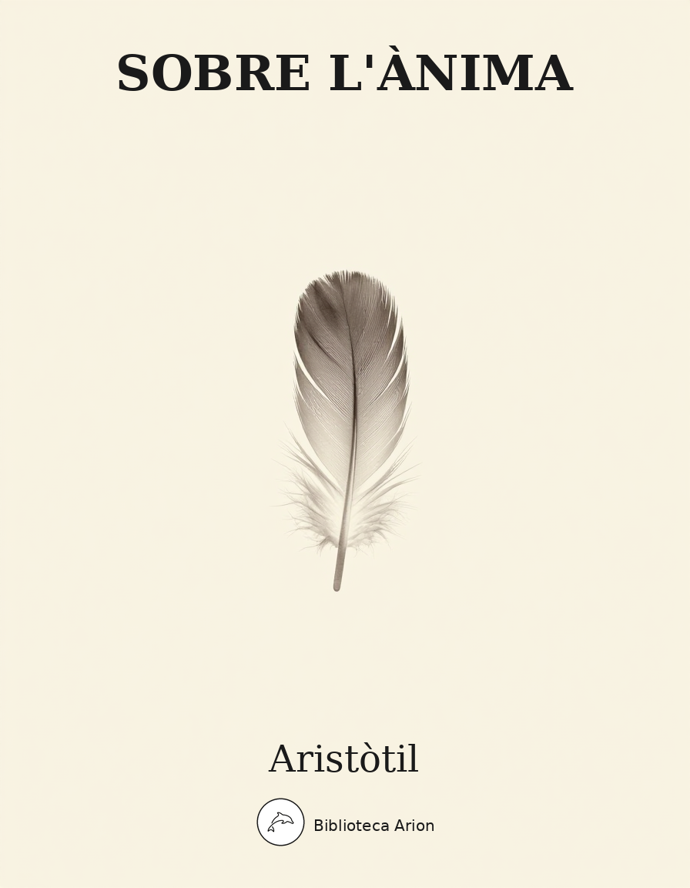

Sobre l'Ànima
Περὶ Ψυχῆς
Tractat fonamental d'Aristòtil sobre la naturalesa de l'ànima (psyche), considerat la primera obra sistemàtica de psicologia filosòfica occidental. En tres llibres, examina les facultats de l'ànima —nutritiva, sensitiva i intel·lectiva— i la seva relació amb el cos, establint la doctrina hilemòrfica segons la qual l'ànima és la forma (eidos) del cos natural que posseeix vida en potència.
Autor: Aristòtil Font: perseus Llengua: grec
Aristotle, Athenian Constitution, Fragments
Aristotle,
Athenian Constitution
H. Rackham, Ed.
(“Agamemnon”, “Hom. Od. 9.1”, “”)
in the text is marked in blue. in the
line to jump to another position:
chapter:
Fragments
chapter 2chapter 3chapter 4chapter 5chapter 6chapter 7chapter 8chapter 9chapter 10chapter 11chapter 12chapter 13chapter 14chapter 15chapter 16chapter 17chapter 18chapter 19chapter 20chapter 21chapter 22chapter 23chapter 24chapter 25chapter 26chapter 27chapter 28chapter 29chapter 30chapter 31chapter 32chapter 33chapter 34chapter 35chapter 36chapter 37chapter 38chapter 39chapter 40chapter 41chapter 42chapter 43chapter 44chapter 45chapter 46chapter 47chapter 48chapter 49chapter 50chapter 51chapter 52chapter 53chapter 54chapter 55chapter 56chapter 57chapter 58chapter 59chapter 60chapter 61chapter 62chapter 63chapter 64chapter 65chapter 66chapter 67chapter 68chapter 69
This text is part of:
Greek and Roman Materials
Search the for:
Editions/Translations
Author Group
View text chunked by:
chapter
section
Table of Contents:
Fragments
section 1chapter 2section 1section 2section 3chapter 3section 1section 2section 3section 4section 5section 6chapter 4section 1section 2section 3section 4chapter 5section 1section 2section 3chapter 6section 1section 2section 3section 4chapter 7section 1section 2section 3section 4chapter 8section 1section 2section 3section 4section 5chapter 9section 1section 2chapter 10section 1section 2chapter 11section 1section 2chapter 12section 1section 2section 3section 4section 5chapter 13section 1section 2section 3section 4section 5chapter 14section 1section 2section 3section 4chapter 15section 1section 2section 3section 4section 5chapter 16section 1section 2section 3section 4section 5section 6section 7section 8section 9section 10chapter 17section 1section 2section 3section 4chapter 18section 1section 2section 3section 4section 5section 6chapter 19section 1section 2section 3section 4section 5section 6chapter 20section 1section 2section 3section 4section 5chapter 21section 1section 2section 3section 4section 5section 6chapter 22section 1section 2section 3section 4section 5section 6section 7section 8chapter 23section 1section 2section 3section 4section 5chapter 24section 1section 2section 3chapter 25section 1section 2section 3section 4chapter 26section 1section 2section 3chapter 27section 1section 2section 3section 4section 5chapter 28section 1section 2section 3section 4section 5chapter 29section 1section 2section 3section 4section 5chapter 30section 1section 2section 3section 4section 5section 6chapter 31section 1section 2section 3chapter 32section 1section 2section 3chapter 33section 1section 2chapter 34section 1section 2section 3chapter 35section 1section 2section 3section 4chapter 36section 1section 2chapter 37section 1section 2chapter 38section 1section 2section 3section 4chapter 39section 1section 2section 3section 4section 5section 6chapter 40section 1section 2section 3section 4chapter 41section 1section 2section 3chapter 42section 1section 2section 3section 4section 5chapter 43section 1section 2section 3section 4section 5section 6chapter 44section 1section 2section 3section 4chapter 45section 1section 2section 3section 4chapter 46section 1section 2chapter 47section 1section 2section 3section 4section 5chapter 48section 1section 2section 3section 4section 5chapter 49section 1section 2section 3section 4chapter 50section 1section 2chapter 51section 1section 2section 3section 4chapter 52section 1section 2section 3chapter 53section 1section 2section 3section 4section 5section 6section 7chapter 54section 1section 2section 3section 4section 5section 6section 7section 8chapter 55section 1section 2section 3section 4section 5chapter 56section 1section 2section 3section 4section 5section 6section 7chapter 57section 1section 2section 3section 4chapter 58section 1section 2section 3chapter 59section 1section 2section 3section 4section 5section 6section 7chapter 60section 1section 2section 3chapter 61section 1section 2section 3section 4section 5section 6section 7chapter 62section 1section 2section 3chapter 63section 1section 2section 3section 4section 5chapter 64section 1section 2section 3section 4section 5chapter 65section 1section 2section 3section 4chapter 66section 1section 2section 3chapter 67section 1section 2section 3section 4section 5chapter 68section 1section 2section 3section 4chapter 69section 1section 2
Current location in this text. Enter a Perseus citation to go to another section or work. Full search
options are on the right side and top of the page.
Fragments
Ἐκ τῶν Ἡρακλείδου περὶ Πολιτειῶν.
The Athenians originally had a royal government. It was when Ion came to dwell with them that they were first called Ionians.
Harpocration s.v.Ἀπόλλων Πατρῷος.
<For when he came to dwell in Attica, as Aristotle says, the Athenians came to be called Ionians, and Apollo was named their Ancestral god.>
Schol. Aristoph. Birds 1537
<The Athenians honor Ancestral Apollo because their War-lord Ion was the son of Apollo and Creusa the daughter3 of Xuthus.>
Ἐκ τῶν Ἡρακλείδου περὶ Πολιτειῶν.
Erechtheus was succeeded as king by Pandion, who divided up his realm among his sons
Schol. Aristoph. Wasps 1223
<giving the citadel and its neighborhood to Aegeus, the hill country to Lycus, the coast to Pallas and the district of Megara to Nisus>.
Ἐκ τῶν Ἡρακλείδου περὶ Πολιτειῶν.
And these sections were continually quarrelling; but Theseus made a proclamation and brought them together on an equal and like footing.
Plut. Thes. 25
<He summoned all on equal terms, and it is said that the phrase 'Come hither, all ye folks'4 was the proclamation of Theseus made when he was instituting an assembly of the whole people.>
Plut. Thes. 25
<And that Theseus first leant towards the mob, as Aristotle says, and relinquished monarchical government, even r seems to testify, when he applies the term 'people'5 in the Catalogue of Ships to the Athenians only.>
Lexicon Patm. p. 152 Sakkel.
< . . . As Aristotle narrates in his Athenian Constitution, where he says: 'And they were grouped in four tribal divisions in imitation of the seasons in the year, and each of the tribes was divided into three parts, in order that there might be twelve parts in all, like the months of the year, and they were called Thirds and Brotherhoods; and the arrangement of clans was in groups of thirty to the brotherhood, as the days to the month, and the clan consisted of thirty men.6>
Ἐκ τῶν Ἡρακλείδου περὶ Πολιτειῶν.
He having come to Scyros met his end by being thrust down a cliff by Lycomedes, who was afraid that he might appropriate the island. But subsequently the Athenians after the Persian Wars brought back his bones.
Schol. Vatic. ad Eur. Hipp. 11.
He came to Scyros <probably in order to inspect it because of his kinship with Aegeus7>
Schol. Vatic. ad Eur. Hipp. 11.
<The Athenians, after the Persian Wars, in conformity with an oracle took up his bones and buried them.>
Ἐκ τῶν Ἡρακλείδου περὶ Πολιτειῶν.
Kings were no longer chosen from the house of Codrus,8 because they were thought to be luxurious and to have become soft. But one of the house of Codrus, Hippomenes, who wished to repel the slander, taking a man in adultery with his daughter Leimone, killed him by yoking him to his chariot with his daughter [? emend 'with his team'], and locked her up with a horse till she died.9
Ἐκ τῶν Ἡρακλείδου περὶ Πολιτειῶν.
The associates of Cylon10 because of his tyranny were killed by the party of Megacles when they had taken refuge at the altar of Athena. And those who had done this were then banished as being under a curse.
1 Heracleides’ Epitome of the first part
2 Heracleides of Lembos in the second century b.c. compiled a book called Ἱστορίαι which contained quotations from Aristotle’s Constitutions. Excerpts made from this book, or from a later treatise by another author based upon it, have come down to us in a fragmentary form in a Vatican MS. of the 8th century, now at Paris, under the title Ἐκ τῶν Ἡρακλείδου περὶ Πολιτειῶν. These were edited by Schneidewin in 1847 and by others later. For a complete study of these contributions to the reconstruction of The Athenian Constitution readers must consult the standard commentators on the latter; only those fragments which belong to the lost early part of the treatise are given here. Quotations of the same passages of Aristotle made by other writers have been collected by scholars, and are inserted in the text in brackets < > where they fill gaps in Heracleides.
3 A word has perhaps been lost in the Greek, giving ‘the wife of Xuthus’—unless indeed the text is a deliberate bowdlerization of the legend. Xuthus, King of Peloponnesus, married Creusa, daughter of Erechtheus, King of Athens, after whose death he was banished; but Creusa’s son Ion was recalled to aid Athens in war with Eleusis, won them victory, and died and was buried in Attica.
4 Perhaps the formula of the crier sent round to announce the meetings of the Ecclesia: c.f. ἀκούετε, λέῳ(‘Oyez’).
5 Hom. Il. 2.547.
6 After Cleisthenes’ reforms, 510 B.C., there were ten tribes, each divided into Thirds and also into ten or more Demes; each Deme was divided into Brotherhoods (number unknown), and these perhaps into Clans.
7 Aegeus, King of Athens, father of Theseus, is not connected in any extant myth with the Aegean island of Scyros.
8 King of Athens, died 1068 B.C. (by the mythical chronology).
9 722 B.C.; the Attic nobles deposed him in punishment.
10 This nobleman seized the Acropolis to make himself tyrant. When blockaded he escaped. His comrades were induced to surrender by the archon, Megacles of the Alcmaeonid family, who promised to spare their lives, but then put them to death. From what follows in the text it appears that the movement to punish this sacrilege only came to a head after Megacles was dead and buried.
Aristotle in 23 Volumes, Vol. 20, translated by H. Rackham. Cambridge, MA, Harvard University Press; London, William Heinemann Ltd. 1952.
The Annenberg CPB/Project provided support for entering this text.
Purchase a copy of this text (not necessarily the same edition) from Amazon.com
Browse Bar
Greek (Kenyon)
Places (automatically extracted)
View a map of the most frequently mentioned places in this document.
Sort places
alphabetically,
as they appear on the page,
by frequency
Click on a place to search for it in this document.
Athens (Greece) (4)
Attica (Greece) (2)
Peloponnesus (Greece) (1)
Paris (France) (1)
Megara (Greece) (1)
Eleusis (Greece) (1)
Aegean (1)
Download Pleiades ancient places geospacial dataset for this text.
Dates (automatically extracted)
Sort dates
alphabetically,
as they appear on the page,
by frequency
Click on a date to search for it in this document.
1847 AD (1)
1537 AD (1)
722 BC (1)
510 BC (1)
1068 BC (1)
References (2 total)
Cross-references from this page
Plutarch, Theseus, 25Cross-references in notes from this page
r, Iliad, 2.547
Search
Searching in English.
More search options
Limit Search to:
Athenian Constitution (this document)
hideStable Identifiers
Citation URI: http://data.perseus.org/citations/urn:cts:greekLit:tlg0086.tlg003.perseus-eng1:fragments
Text URI: http://data.perseus.org/texts/urn:cts:greekLit:tlg0086.tlg003.perseus-eng1
Work URI: http://data.perseus.org/texts/urn:cts:greekLit:tlg0086.tlg003
Catalog Record URI: http://data.perseus.org/catalog/urn:cts:greekLit:tlg0086.tlg003.perseus-eng1
Display Preferences
Greek Display:
Unicode (precombined)
Unicode (combining diacriticals)
Beta Code
SPIonic
SGreek
GreekKeys
Latin transliteration
Arabic Display:
Unicode
Buckwalter transliteration
View by Default:
Original Language
Translation
Browse Bar:
Show by default
Hide by default
No hi ha text grec per traduir
Fragments
D’Heràclides sobre Constitucions
Els atenesos tenien originalment un govern reial. Fou quan Ion vingué a establir-se entre ells que per primera vegada foren anomenats jonis.
Harpocració s.v. Apol·lo Paternal
Escoli d’Aristòfanes, Ocells 1537
D’Heràclides sobre Constitucions
A Erecteu el succeí com a rei Pandió, que repartí el seu regne entre els seus fills
Escoli d’Aristòfanes, Vespes 1223
D’Heràclides sobre Constitucions
I aquests territoris estaven en contínua disputa; però Teseu va fer una proclama i els reuní en condicions d’igualtat.
[ERROR: El CLI ha retornat una resposta buida (sense contingut)]
[ERROR: El CLI ha retornat una resposta buida (sense contingut)]
Hi ha una discrepància important que he de assenyalar: El text proporcionat no és grec d’Aristòtil, sinó notes explicatives en anglès d’una edició moderna. Són notes a peu de pàgina (numerades del 3 al 10) que expliquen referències mitològiques, històriques i contextuals del text original. Les instruccions demanen traduir “text en grec al català literari” d’Aristòtil, però el contingut real és: - Notes d’editor en anglès - Referències a mites grecs (Xuthus, Creusa, Ion) - Explicacions històriques (reformes de Cleístenes, cronologia) - Referències literàries (Homer). Pregunta: Vols que: 1. Tradueixi aquestes notes de l’anglès al català (adaptant-les a notes d’editor catalanes)? 2. Esperis el text grec original d’Aristòtil per fer la traducció demanada? Si confirmes que vols la traducció de les notes, puc procedir, però seria una traducció anglès→català d’aparell crític, no una traducció literària grec→català d’Aristòtil.
Detecte una confusió en el material proporcionat. El text que m’has enviat no és el text grec original d’Aristòtil, sinó metadades d’una pàgina web del Perseus Digital Library sobre la “Constitució d’Atenes” (Ἀθηναίων Πολιτεία), no “Sobre l’Ànima” (Περὶ Ψυχῆς). El contingut inclou: - Informació bibliogràfica - Llocs i dates extracts automàticament - URI i opcions de visualització - Referències a altres obres. A més, has indicat que el gènere és “narrativa”, però tant “Sobre l’Ànima” com la “Constitució d’Atenes” són obres de filosofia i teoria política respectivament. **Necessito que proporcionis: ** 1. El text grec original que vols que tradueixi 2. Confirmació de quina obra específica d’Aristòtil estem traduint 3. Clarificació del gènere correcte Un cop tingui el text grec original, podré oferir-te una traducció al català literari seguint les directrius establertes.
Traducció de domini públic.
Glossari
- (psychē)
-
Traducció: ànima
↩ Tornar al text - (eidos)
-
Traducció: forma
↩ Tornar al text - (hylē)
-
Traducció: matèria
↩ Tornar al text - (energeia)
-
Traducció: acte, actualitat
↩ Tornar al text - (dynamis)
-
Traducció: potència
↩ Tornar al text - (entelecheia)
-
Traducció: entelèquia
↩ Tornar al text - (nous)
-
Traducció: intel·lecte
↩ Tornar al text - (aisthēsis)
-
Traducció: sensació, percepció
↩ Tornar al text - (phantasia)
-
Traducció: imaginació
↩ Tornar al text - (threptikon)
-
Traducció: facultat nutritiva
↩ Tornar al text - (aisthētikon)
-
Traducció: facultat sensitiva
↩ Tornar al text - (noētikon)
-
Traducció: facultat intel·lectiva
↩ Tornar al text - (koinē aisthēsis)
-
Traducció: sentit comú
↩ Tornar al text - (nous poiētikos)
-
Traducció: intel·lecte agent
↩ Tornar al text - (nous pathētikos)
-
Traducció: intel·lecte passiu
↩ Tornar al text - (orexis)
-
Traducció: desig, appetició
↩ Tornar al text - (kinēsis)
-
Traducció: moviment
↩ Tornar al text - (to ti ēn einai)
-
Traducció: l'essència, el què era ser
↩ Tornar al text